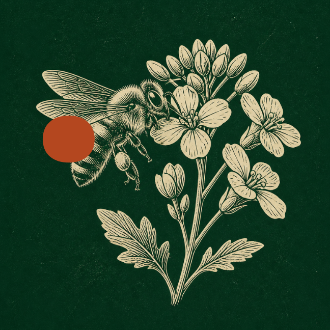
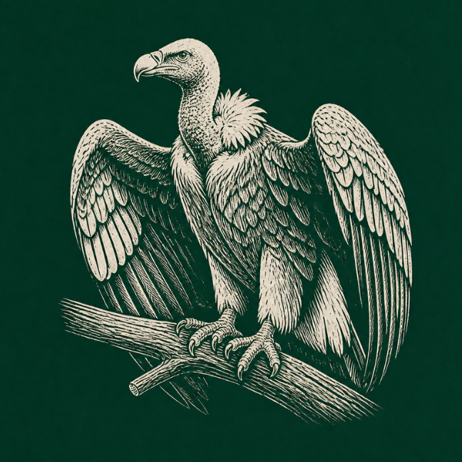
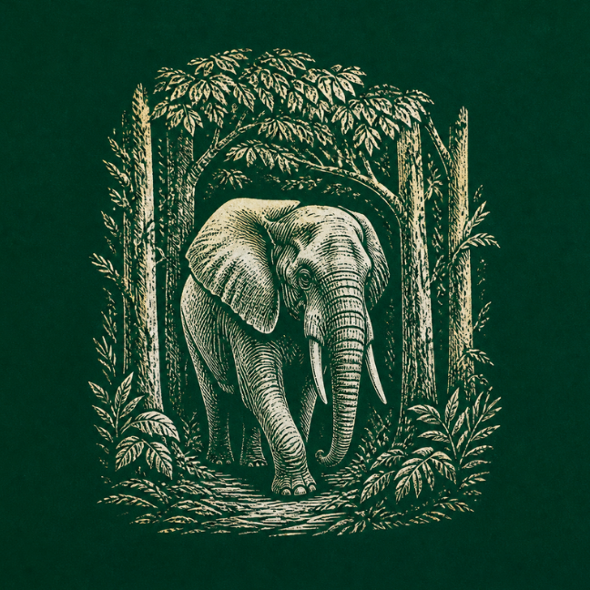
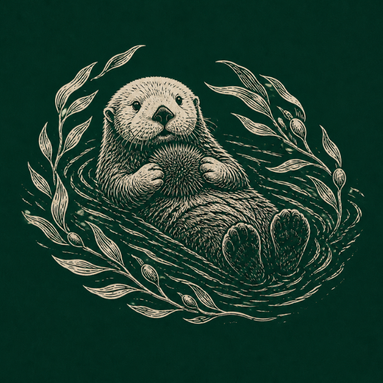

every animal does work for this planet that no one pays for. When they thrive, people thrive. Their lives are worth protecting, full stop.
the idea that nature is free to take, and profit that leaves empty skies, silent fields and poisoned rivers behind it.
that we count wildlife as real wealth. Protect habitats, end cruelty in what we eat and wear, and make those who destroy pay.
a future where people and animals share the planet and prosper together, and success is measured by how alive the world is.
This is for my generation: the students, shoppers and future makers who will decide what we buy, design and protect. You are not too small to matter. Neither is a bee.